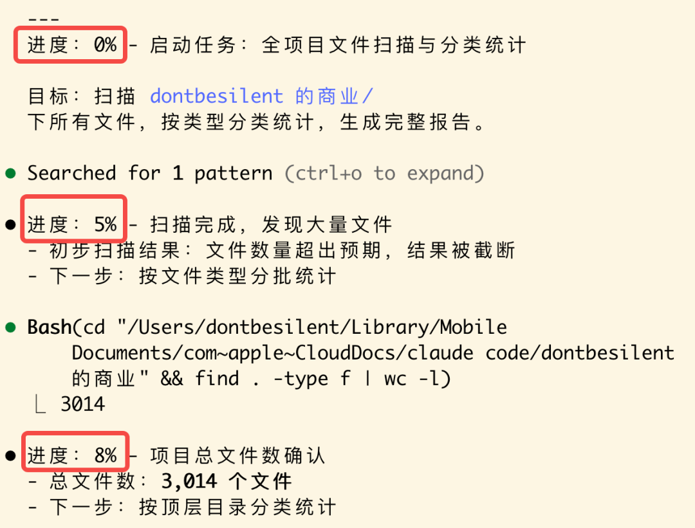

Claude Code 干活儿老是不显示进度，等着着急。
在 CLAUDE.md 里面加了一个工作模式：执行任务的时候在指令前面添加「/进度」，AI 就会把任务拆成小步骤，每一步都详细汇报。

使用示例
/进度 整理所有文件/进度 批量处理 100 个图片/进度 分析所有数据文件
原理
Claude Code 本身就是流式输出，这个提示词只是让 AI 更频繁地输出中间状态。
利用现有特性，不需要额外工具。
📋 复制这段话，直接发给 Claude Code
请帮我在项目根目录创建/更新 CLAUDE.md 文件，添加以下「进度更新模式」配置：工作模式进度更新模式（/进度）触发方式：用户说 /进度 时启动核心原则：详细 + 高频 = 让用户随时知道我在做什么行为规则：任务拆分：将任务拆分成尽可能小的步骤，每个步骤都输出详细信息：每次更新都包含进度百分比、当前操作、具体细节、中间结果高频更新：批量操作时每处理一小批就更新一次，多步骤任务每完成一个子步骤就更新技术细节：显示具体文件名、路径、操作类型、数据量，遇到问题时立即说明使用场景：批量处理文件大量数据分析多步骤复杂任务任何需要较长时间的操作详细示例：用户：/进度 整理所有文件AI：开始整理文件...进度：5% - 正在扫描根目录- 找到 3 个子文件夹进度：10% - 正在扫描第一个文件夹- 找到 12 个文件- 发现 3 个需要移动的文件进度：15% - 正在处理文件 1/12- 文件：「example.md」- 操作：移动到目标文件夹- 状态：✓ 完成...（持续更新）进度：100% - 完成！- 共处理 20 个文件技术限制说明：Claude Code 的输出是"一次完整回复"，不是真正的"实时流式输出"我会在一次回复中，通过多个段落来模拟"高频更新"的效果每个段落代表一个阶段的详细进度如果 CLAUDE.md 文件已存在，请追加到文件末尾。配置完成后，告诉我如何使用这个功能。